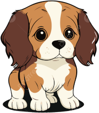

Fico feliz em ser o teu primeiro site pessoal!
Aquà é onde guardas tudo(ou quase tudo) que aprendeste sobre HTML e CSS.
Primeiramente, aprendeste a cortar frases com o <br>.
Ex:
Esta frase vai ser cortada
agora!
😁😁😁
Depois, aprendeste a pôr imagens no site.
Ex:

E a seguir, aprendeste a colocar um icon no site!
Se repararem o icon do site é igual a esta imagem:
LINKS!! Aprendeste a pôr links no site!
Ir para a página 2
Ir para a página 3
Neste momento, aprendeste a usar CSS.
Foi usando CSS que o site ficou com esta cor de fundo e o texto ficou mais bonito.